Refuerzos delanteros en Panamá
78 disponibles hoy, originales y genéricas, cada una con su foto y su código. Elige la marca de tu carro:
- Garantía de 3 días
- Foto real de cada pieza
- Efectivo, Yappy o ACH
- Lunes a sábado, 8:00 a. m. a 5:00 p. m.
Refuerzos delanteros para KIA 14
 R034KIA Picanto2017-24 · original nuevo
R034KIA Picanto2017-24 · original nuevo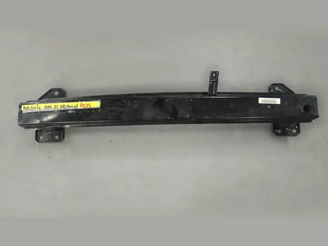
R035KIA Forte2019-21 · original R036KIA Picanto2011-17 · original
R036KIA Picanto2011-17 · original R037KIA Cerato2018 · original
R037KIA Cerato2018 · original R038KIA Picanto2011-17 · original
R038KIA Picanto2011-17 · original R039KIA Sportage2011-16 · original nuevo
R039KIA Sportage2011-16 · original nuevo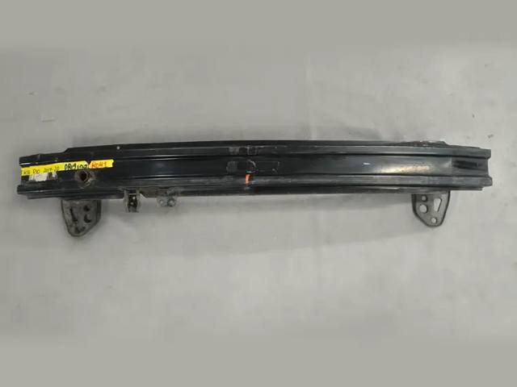
R041KIA Rio2017-20 · original R042KIA Sportage2011-16 · original
R042KIA Sportage2011-16 · original R043KIA Sportage2017-21 · original
R043KIA Sportage2017-21 · original R044KIA Rio2018-21 · genérico
R044KIA Rio2018-21 · genérico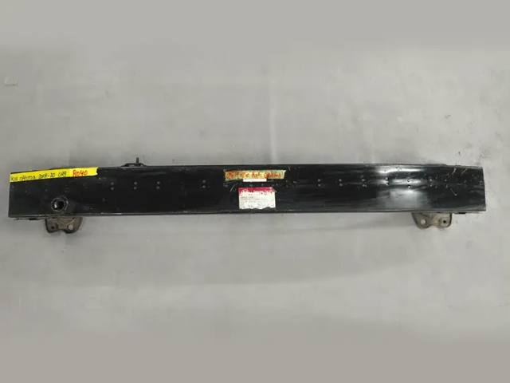
R070KIA Optima2018-20 · original R078KIA Sorento2014-20 · original nuevo
R078KIA Sorento2014-20 · original nuevo R084KIA Rio2018-23 · original
R084KIA Rio2018-23 · original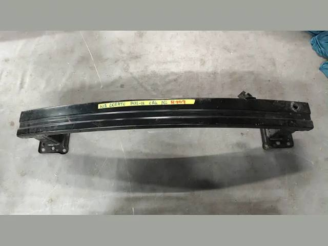
R109KIA Cerato2016-18 · originalRefuerzos delanteros para Toyota 13
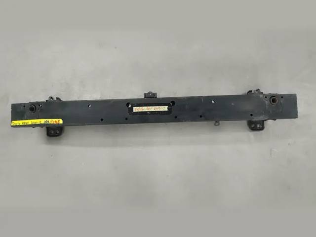
R048Toyota RAV42006-12 · original R049Toyota RAV42013-18 · original
R049Toyota RAV42013-18 · original R050Toyota Corolla2014-17 · original
R050Toyota Corolla2014-17 · original R051Toyota Hiace2005-20 · original
R051Toyota Hiace2005-20 · original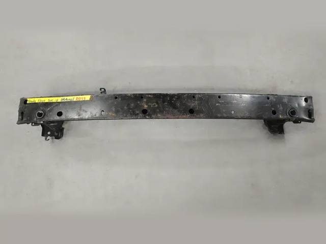
R053Toyota RAV42013-18 · original R055Toyota Yaris2018-20 · original nuevo
R055Toyota Yaris2018-20 · original nuevo R057Toyota Hilux Revo / Fortuner2015-22 · original
R057Toyota Hilux Revo / Fortuner2015-22 · original R063Toyota Corolla2019-25 · original
R063Toyota Corolla2019-25 · original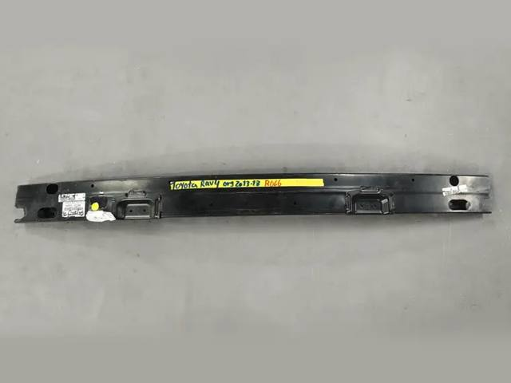
R066Toyota RAV42013-18 · original nuevo R098Toyota Hilux Revo / Fortuner2015-21 · original
R098Toyota Hilux Revo / Fortuner2015-21 · original R099Toyota Hilux Revo / Fortuner2015-21 · original
R099Toyota Hilux Revo / Fortuner2015-21 · original R104Toyota Hilux / Fortuner2016-22 · original
R104Toyota Hilux / Fortuner2016-22 · original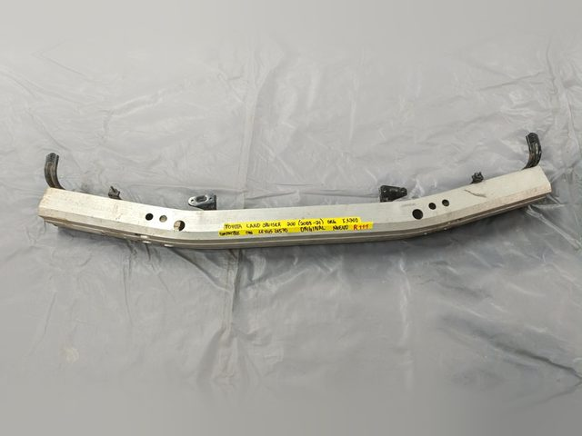
R111Toyota Land Cruiser 2002008-21 · original nuevoRefuerzos delanteros para GAC 8
 R020GAC GS3 Power2021-26 · original
R020GAC GS3 Power2021-26 · original R021GAC GS32023-26 · original nuevo
R021GAC GS32023-26 · original nuevo R022GAC GS82016-23 · original
R022GAC GS82016-23 · original R023GAC GS42020 · original
R023GAC GS42020 · original R024GAC GS32017-19 · original
R024GAC GS32017-19 · original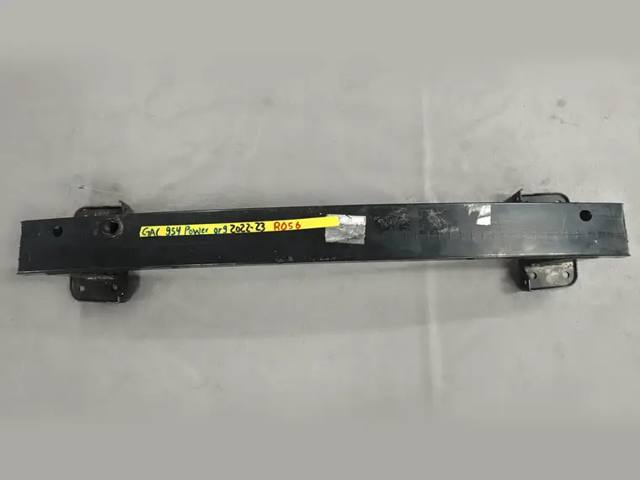
R056GAC GS4 Power2022-23 · original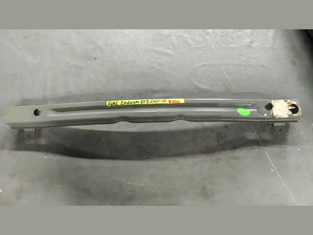
R100GAC Emzoom2022-26 · original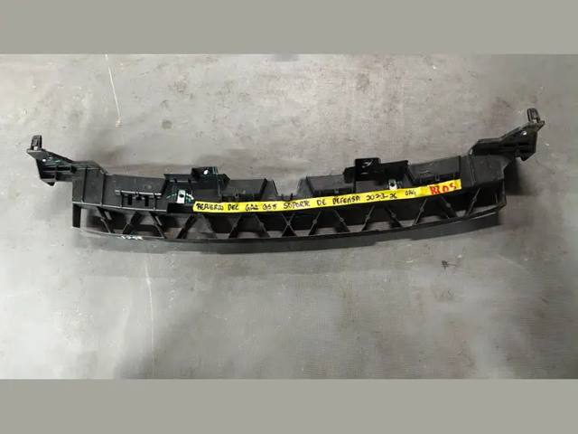
R105GAC GS82023-26 · originalRefuerzos delanteros para Hyundai 6
 R045Hyundai Creta2016-18 · original
R045Hyundai Creta2016-18 · original R046Hyundai Grand i102016-19 · original nuevo
R046Hyundai Grand i102016-19 · original nuevo R047Hyundai Grand i102021-24 · original
R047Hyundai Grand i102021-24 · original R061Hyundai Santa Fe2012-18 · original
R061Hyundai Santa Fe2012-18 · original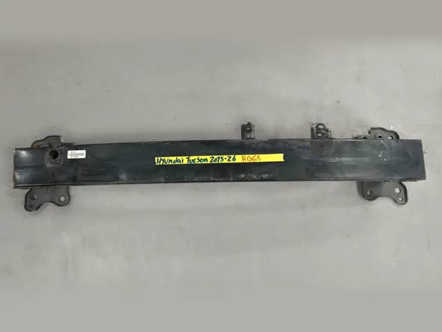
R065Hyundai Tucson2015-26 · original R107Hyundai Tucson ix352016-21 · genérico
R107Hyundai Tucson ix352016-21 · genéricoRefuerzos delanteros para Ford 5
 R004Ford Explorer2020-25 · original
R004Ford Explorer2020-25 · original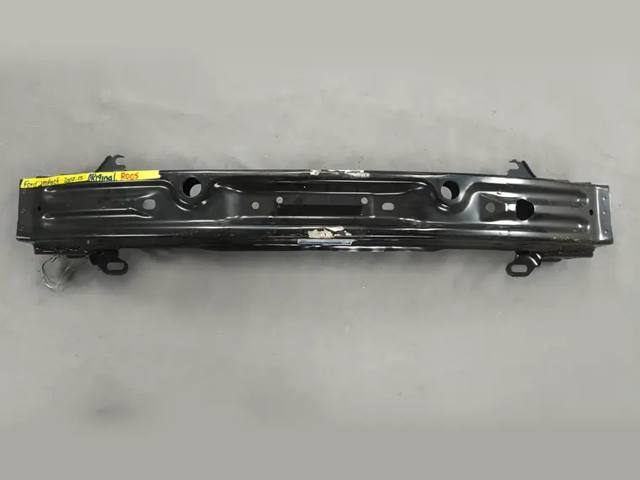
R005Ford Edge2007-15 · original R006Ford Edge2007-10 · original
R006Ford Edge2007-10 · original R072Ford Edge2016 · original nuevo
R072Ford Edge2016 · original nuevo R085Ford Expedition2007-14 · original
R085Ford Expedition2007-14 · originalRefuerzos delanteros para Jeep 4
 R007Jeep Renegade 1.82018-23 · original nuevo
R007Jeep Renegade 1.82018-23 · original nuevo R008Jeep Renegade2017-21 · original
R008Jeep Renegade2017-21 · original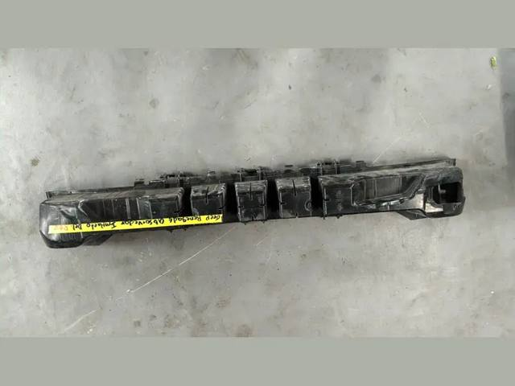
R102Jeep Renegade2022-25 · original R103Jeep Renegade2022-25 · original
R103Jeep Renegade2022-25 · originalRefuerzos delanteros para Mazda 4
 R016Mazda CX-302020-24 · original
R016Mazda CX-302020-24 · original R017Mazda CX-302020-24 · original
R017Mazda CX-302020-24 · original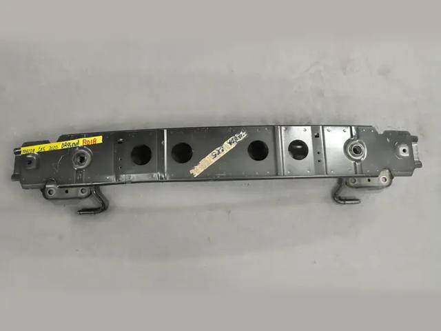
R018Mazda CX-52017-25 · original R019Mazda CX-52012-17 · original
R019Mazda CX-52012-17 · originalRefuerzos delanteros para BMW 3
 R012BMW X3 / X4
R012BMW X3 / X4 R013BMW X1
R013BMW X1 R015BMW X5
R015BMW X5Refuerzos delanteros para Honda 3
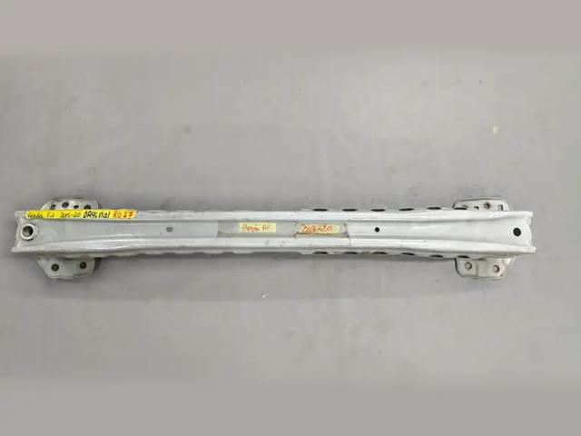
R027Honda City / Fit2014-20 · original R028Honda City / Fit2014-20 · original
R028Honda City / Fit2014-20 · original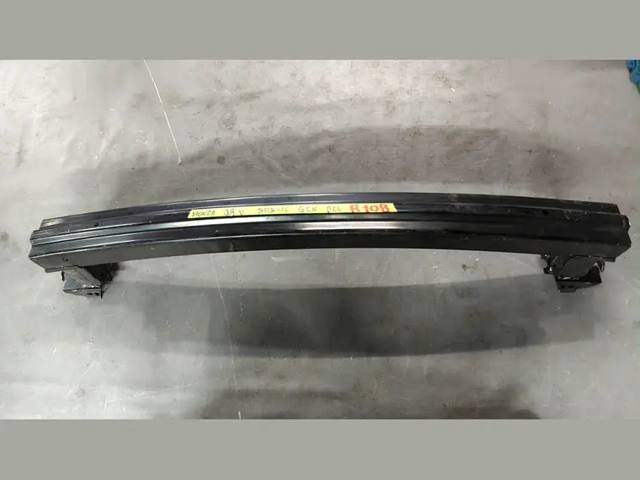
R108Honda CR-V2012-16 · genéricoRefuerzos delanteros para Nissan 3
 R031Nissan Qashqai2014-17 · original
R031Nissan Qashqai2014-17 · original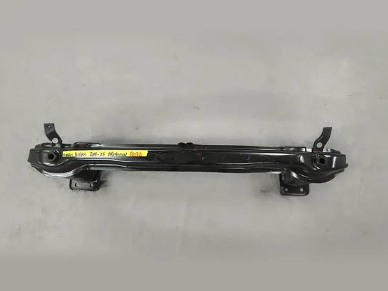
R032Nissan Kicks2018-25 · original R033Nissan Frontier2005-15 · original
R033Nissan Frontier2005-15 · originalRefuerzos delanteros para Volkswagen 2
 R002Volkswagen Beetle 5C5
R002Volkswagen Beetle 5C5 R003Volkswagen Polo
R003Volkswagen PoloRefuerzos delanteros para Chevrolet 2
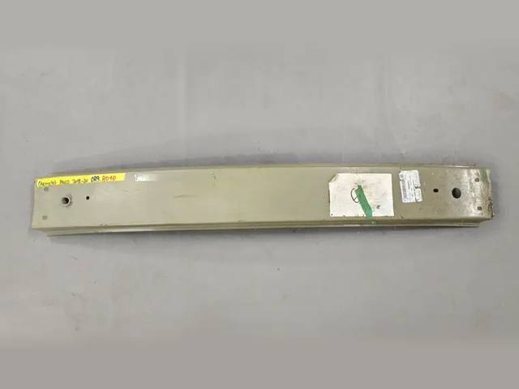
R010Chevrolet Aveo2018-20 · original nuevo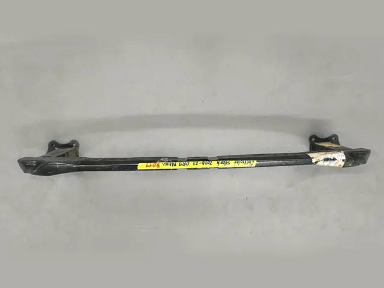
R011Chevrolet Spark2016-21 · original nuevoRefuerzos delanteros para Mitsubishi 2
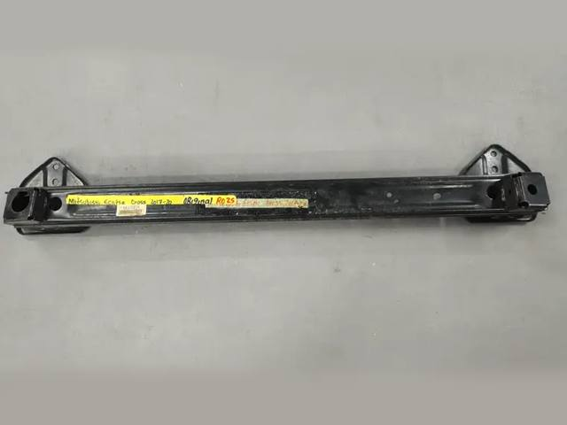
R025Mitsubishi Lancer / Eclipse Cross2008-20 · original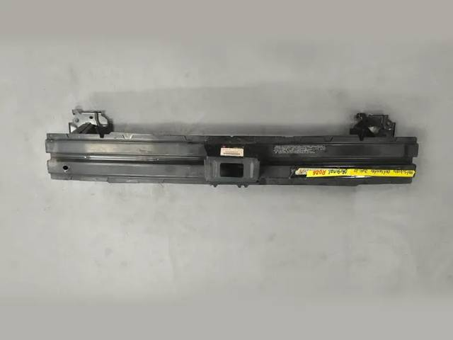
R026Mitsubishi Outlander2014-21 · originalRefuerzos delanteros para Mercedes-Benz 2
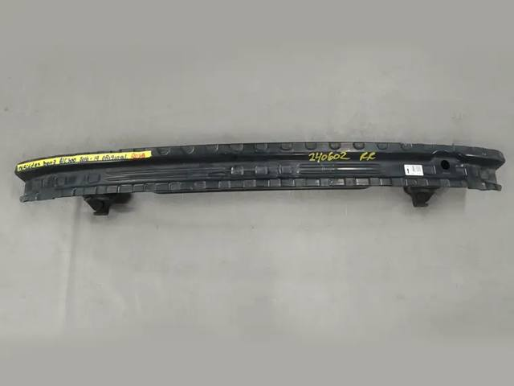
R058Mercedes-Benz GLC 3002016-22 · original R069Mercedes-Benz Clase E W2122010-16 · original nuevo
R069Mercedes-Benz Clase E W2122010-16 · original nuevoRefuerzos delanteros para Maxus 2
 R071Maxus T60 / EVO 30
R071Maxus T60 / EVO 30Refuerzos delanteros para Isuzu 1
 R001Isuzu D-Max
R001Isuzu D-MaxRefuerzos delanteros para Mini 1
 R009Mini Cooper Countryman
R009Mini Cooper CountrymanRefuerzos delanteros para BYD 1
 R060BYD Song Plus
R060BYD Song PlusRefuerzos delanteros para Lexus 1
Refuerzos delanteros para Audi 1
Otros tipos de pieza
Parrillas 339Faros y lámparas delanteras 263Defensas traseras 248Lámparas traseras 210Defensas delanteras 207Flares 184Covers de halógena 167Guardafangos 143Halógenas y faros antiniebla 114Puertas 99Cubrepolvos 92Capós 69Tapas de baúl 69Marcos de radiador 58Retrovisores 56Estribos y rolling boards 55Defensas traseras inferiores 55Defensas delanteras inferiores 54Tapas superiores de radiador 49Vidrios 47Molduras de puerta 46Depósitos de agua 40Molduras traseras 33Protectores inferiores 30Refuerzos traseros 28Guardafangos traseros 22Copas 20Extensiones de defensa trasera 18Ventiladores 13Extensiones de defensa delantera 8Tableros 6Accesorios nuevos 5Molduras delanteras 4Soportes de defensa 2Discos de freno 1Covers de vagón (bedliner) 1